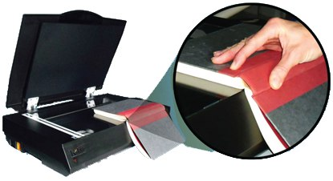
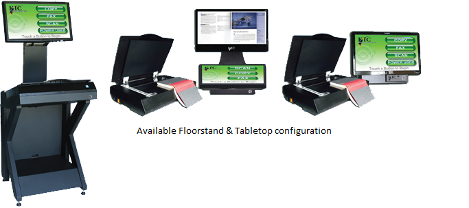

KIC BookEdge
KIC Bookedge Technical Specification
Max Capture Area
17 x 11.8 Inches (432 x 300 mm)
Resolutions
150, 200, 300, 400, 600 dots per inch
Maximum Speed
5.0 seconds for full bed at 200 dpi 8.5 seconds for full bed at 600 dpi
Dimensions (H.W.D)
31 x 25 x 15" (787.4 x 625 x 381 mm).
59 x 26.5 x 23" (1498.6 x 660.4 x 584.2 mm) with optional stand
Weight
30 lbs, 114 lbs with optional floorstand
Power Consumption
50W Stand-by, 127W Operation (printer not included)


- Copy two face-up, full-color pages with a single touch
- Create full color electronic images and/or papers copies
- Review electronic images into proper order with your fingertip
- Select file formats such as PDF, JPEG, PNG, TIFF, even MP3(audio)
- Simply place your smart device on KIC's optional SmartDoc and with
just two touches, you are ready very high-speed transfer. - Sending scanned images via email is also fast and easy with hot-keys
that are pre-programmed with your institution's base email address. - Output to Google Docs / Google Apps for Education and other cloud-
based tools can also be simplified with pre-programmed hot-keys. - Insert a USB flash memory device and KIC auto-selects USB output.
Output Color Depth
24 bit color, 8 bit grayscale
Digital File Interfaces
USB 2.0, email, FTP, Web/Cloud storage (e.g.
Google Docs), file folder (for staff & faculty only
Image Output Formats
PDF, JPEG, PNG and TIFF rich text and searchable PDF (optional)
Audio Output Format
MP3 audio text-to-audio (optional)
Printer Interface
10/100/1000 megabit Ethernet or USB 2.0
Printed Output Formats
8,5 x 11", 11 x 17, simplex, duplex, color & 13 x 19" monochrome (printer not included)
Image Treatment Functions
Split pages (left & right), clip, crop, change
brightness/contrast, change resolutions
(dpi), select color, grayscale, or B&W
(dpi), select color, grayscale, or B&W
Lamps
White LED's, no IR/UV emission
KIC Technical Specifications
Available Floorstand and Tabletop Configuration